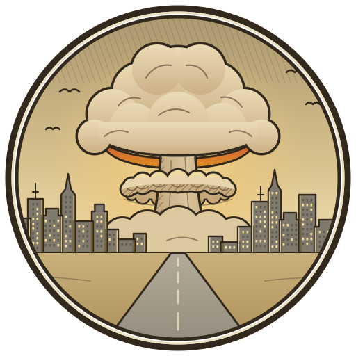

You
Backpack
Your backpack is empty.
Your backpack is empty.
You have no shelter yet. Set one up at home: go to the Wastes and create it there.
No one has joined you yet.
Tap the map to set your position.
When you walk outdoors, stay aware of your surroundings. Don't enter restricted, private or dangerous areas, and keep an eye on traffic.

Nobody agrees on what came first: the sirens, the flash, or the silence after. The cities emptied, the roads went quiet and the lights never came back.
You lived through the first winter. Now the cans are running out, and out there someone is still calling for help.
Start at home: that is where your shelter will stand.
Everyone who starts with the same World ID gets the same land around their starting point.